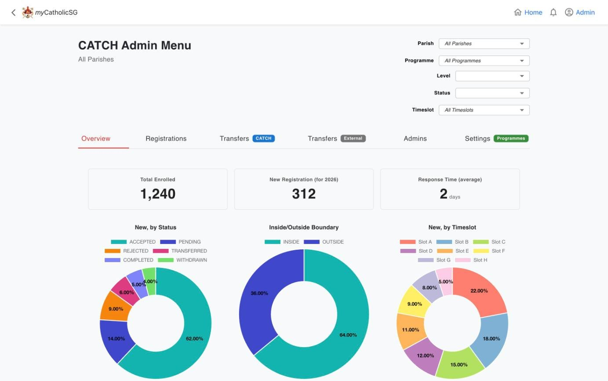
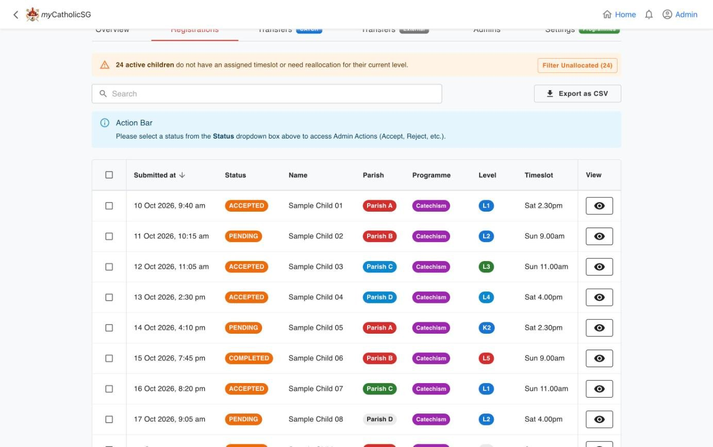
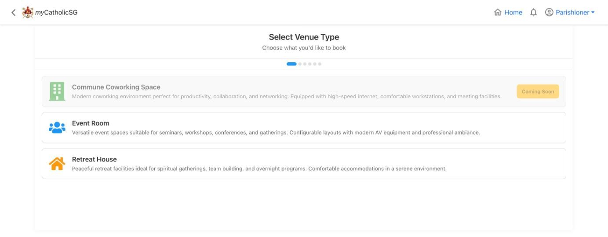
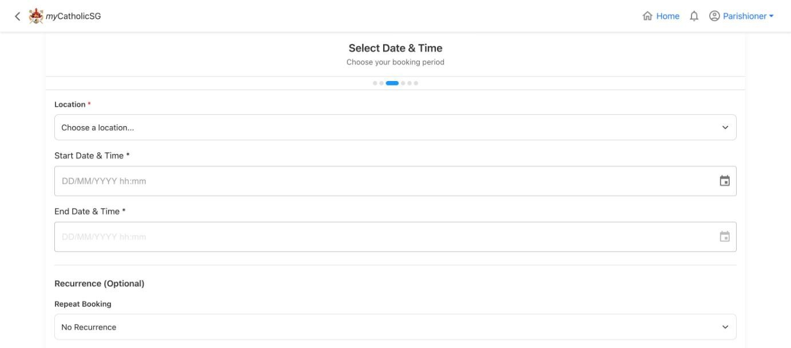
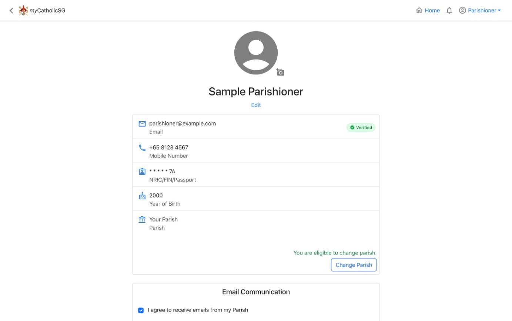
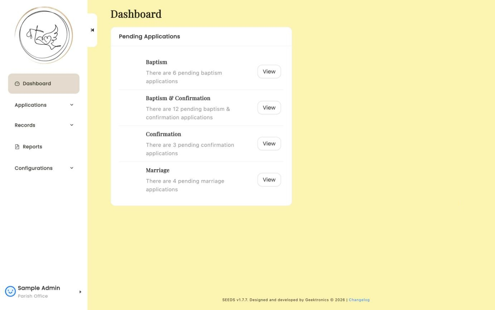
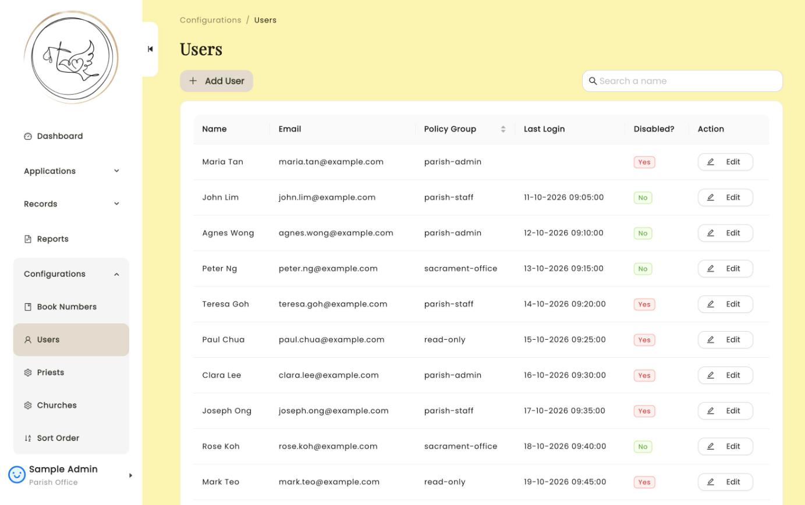

Project write-ups · 13 stories
behind
the work.
What each project was, what went wrong, what I changed and what I took from it, with the photos to show it. The work list has the short version, and the résumé fits it all on one page.
- 01myCatholicSG AppBuilding for the Church
- 02SpeakEasyBuilt to be heard
- 03Cannon & Projectile ChallengePredict, test, compare, refine
- 04Physical World 1D ChallengeFewer parts, fewer ways to fail
- 05Life Cycle AnalysisA lower-carbon badminton racket
- 06Domus OrationisA house of prayer on the rice terraces
- 07Design ComputationGenerative and parametric forms
- 08Reading Museum SilencesWhat the wall labels leave out
- 09Social Media & FIATPosters that feel like an invitation
- 10Mission Trip CampaignOutreach with Fraternitas and CHARIS
- 11PhotographyThirty-six frames at a time
- 12Fifth RowLeading outside class
- 13My SUTD JourneyWhere it all began
myCatholicSG App
Building for the Church
Since September 2026, I’ve been a technical intern at the Digital Church Office (DCO), working on myCatholicSG. My job is to make sure every change works for the people who use the app, from parishioners booking a sacrament to parish admins running catechism classes.
Testing myCatholicSG
The app is built with React and Vite on Firebase. Before a change ships, I check out the developer’s pull request, run it locally and test it the way a parishioner, catechist or parish admin would use it. I have tested more than ten features this way, from room bookings and SEEDs sacrament bookings to catechism timeslots in CATCH.
To test the awkward cases, I seed a private Firebase project with edge-case data using Node.js scripts, such as clashing bookings, then check the fix through the API in Postman. I’ve verified fixes for password-reset loops, login race conditions and security-audit upgrades, plus a new CATCH audit trail for timeslot and level changes with its CSV export. Every bug I catch in testing is one a parishioner never runs into.
SingPass and Myinfo with GovTech
I tested an 84-file SingPass change end to end: the consent screen and data scopes, the verified badge, NRIC masking on profiles and digital forms, and records for children and sponsored children. Alongside it, I helped prepare the SingPass and Myinfo approval submissions to GovTech, covering 20 data fields, so verified records can pre-fill sacrament and catechism forms. The work connects a national digital identity system with some of the most personal moments in someone’s faith, and it has shown me how much trust people place in a simple login.
Screens I test
These are some of the screens I check before each release. They are shown with sample data, so no real parishioner details appear.







Overall Reflection
Every bug I catch in testing is one a parishioner never runs into. This work connects a national digital identity system with some of the most personal moments in someone’s faith, and it has shown me how much trust people place in a simple login. It has also taught me to think like each kind of user before I call something finished.
SpeakEasy
Built to be heard
SpeakEasy started with a number from our research: three in four hawkers said they find it hard to hear customers with speech impairments during the lunch rush. We kept picturing that customer at the front of a busy queue, trying to order and not being understood.
Before this project, I thought of accessibility as something you add at the end. Here it was the whole brief. For every technical decision, we asked one question first: does this help the user be understood, on their own terms?
Choosing something people would wear
That question ruled out our flashier ideas. An anti-muffle mask and eye-tracking glasses looked exciting on the whiteboard, but they were bulky, obvious and too much to wear every day. A small badge or necklace asks almost nothing of the person wearing it: you clip it on in the morning and forget about it until you need it. Often the most respectful design is the one that draws the least attention.
Vosk or Whisper?
The same question decided our software. Vosk ran faster on the Raspberry Pi but made more mistakes. Whisper was slower but much more accurate, even with background noise. On paper that’s a simple trade-off. For our user, it’s the difference between a quick answer that’s often wrong and a slower one they can rely on, so we chose accuracy.


From breadboard to wearable
Building it taught me a lot on its own. Our first prototype was a breadboard, a Raspberry Pi and two speakers on a desk. Turning that into a compact wearable with a proper CAD housing showed me how much design lives in the small details: where the speaker sits, how the device hangs and how it feels after a full day.
Overall Reflection
We reached 80% accuracy in transcription and speech synthesis. That’s a good start, but for someone who relies on the device to be understood, “mostly works” isn’t enough. Every misheard word is a frustrating moment for a real person.
The next step would be testing it at a real hawker stall at lunchtime, with real noise and real queues. That’s where it would truly be judged. SpeakEasy left me with a standard I try to hold all my work to: technology is at its best when it helps someone be heard.
Cannon & Projectile Challenge
Predict, test, compare, refine
One of my first projects at SUTD was firing a tennis ball into a laundry bag. It taught me something every project since has repeated: theory is where you start, not where you finish.
Calibrating, shot by shot
On paper, projectile motion is simple. Pick an angle and a launch speed, and the maths tells you where the ball lands. In practice we had 3D-printed parts, a tennis ball that never flew the same way twice, and a laundry bag that looked big from the launcher and tiny once the ball was in the air. Closing that gap was where the real engineering happened.
Our predictions didn’t get better because we used more complicated physics. They got better because we kept firing, measuring and adjusting until the numbers matched what we saw. Every miss told us something, and after a while I stopped seeing failed shots as mistakes. They were the most useful feedback we had.


A team that had only just met
It was also my first real taste of teamwork at SUTD. Group SC01-4 had only just met, and calibrating the launcher meant trusting each other’s measurements and splitting the work so calculating, printing and testing could happen at the same time. By the time we lined up for the scored shots, we felt like a team rather than four people put in a group.
Overall Reflection
Finishing first in the cohort felt amazing, but the habit it started has mattered more: predict, test, compare, refine. I used the same loop for the rubber-band car in the 1D Challenge, for SpeakEasy and for most design decisions since.
I won’t remember the exact launch angle we settled on, but I’ll remember the loop. I still don’t trust a perfect answer on paper until I’ve tested it.
Physical World 1D Challenge
Fewer parts, fewer ways to fail
The moment I remember most from this project is our gear train stripping its teeth after two turns. The design we were proudest of simply couldn’t work.
The gear train that broke
Our first prototype looked like serious engineering: a 5:1 gear train, a torsion spring to store energy, and carefully modelled, printed parts. It failed because the spring’s peak torque was more than the printed teeth could take.
Going back to the brief
When something breaks, the natural reaction is to reinforce it: thicker teeth, stronger infill, one more fix to the same idea. We could have spent weeks patching it. Instead, we went back to what the car actually had to do: deliver steady torque, grip steps from 1 cm to 4 cm, and keep a 200 g load stable all the way to the finish.
The rubber-band car
Looked at that way, the answers were fairly obvious. A rubber band wound around the axle gave smooth, steady torque without the sudden peak that broke our gears. Big wheels with rubber-band treads gave grip, and a low, wide basket kept the load centred. Just before the run, we removed one more part, a zip-tie release that kept snagging the band. The final car looked much less impressive than the gear train, but on challenge day it climbed every step and delivered its load.

Overall Reflection
Removing complexity instead of adding it is probably the biggest engineering lesson of my first year. It goes against the urge to make work look sophisticated. The best solution usually isn’t the one with the most parts; it’s the one with the fewest ways to fail.
It also taught our team of five how to disagree well. Instead of arguing over ideas, we built them, tested them and let the results decide, so everyone could get behind the final call.
I still describe how I work using what this car taught me: test early, find where it actually fails, then simplify. I use it for code, posters and events now.
Life Cycle Analysis
A lower-carbon badminton racket
A badminton racket looks light and harmless: a frame, some strings, a grip. Our life cycle analysis told a different story. Almost all of its 1.67 kg of CO₂ came from one choice, the carbon fibre frame, long before anyone played with it.
It changed how I look at products. Everything has a history that starts in a factory and ends in an incinerator, a landfill or, if it’s designed well, recycling. Most of the impact happens in stages the user never sees: the very high temperatures needed to make carbon fibre, the energy used in processing, and what happens at the end of its life.
Where the carbon comes from
Granta EduPack taught me to look at materials as a whole chain. Where do they come from, how much energy goes into making them, and what happens when they’re thrown away? Answering that properly meant modelling every part: the carbon fibre frame, nylon strings, polyurethane grip and balsa handle base.

The redesign
The redesign was where engineering and sustainability had to work together. Flax fibre composite and bio-based PA410 weren’t easy swaps. Each had to match the toughness and tensile strength players expect, which we checked on the property charts. It would have been easy to pick the greenest material and ignore performance, or the other way round. Instead we found materials that hold up on court and cut the footprint from 1.67 kg to 0.24 kg of CO₂, about 85% less.
My part: deciding what to measure
My part was the goal and scope, the inventory analysis and the impact assessment, which meant deciding what to measure before measuring anything. Where is the system boundary? Which stages count? What makes the comparison fair? It’s less exciting than printing a prototype, but every result depended on it. Get the scope wrong and you end up with confident numbers that answer the wrong question.
Overall Reflection
That carries over to the analytics side of my studies. Whether it’s a racket, a supply chain or an investment, the numbers only help if you’re asking the right question. It also gave me a more realistic view of sustainability: switching materials helps, but the bigger gains come when better materials, better processes and smarter design come together from the start.
Domus Orationis
A house of prayer on the rice terraces
Domus Orationis asked something I’d never been asked as a designer: how do you design for silence? Everything I’d made before was meant to do something: cars that move, launchers that fire, devices that listen and speak. A house of prayer works the other way. It slows people down, shuts out the noise and makes room for something beyond everyday life.
Designing for silence
That idea guided every decision. We placed the house among the rice terraces of Mù Cang Chải in Vietnam’s highlands, a landscape that already feels calm. The upper floors open out to the light and the hills through timber lattices, so the view becomes part of the prayer. Below them, the adoration room is set into the slope, hidden away and reached by a spiral staircase.
The walk down
That walk down is the heart of the design. As you go underground, the bright views fall away step by step until you reach a darker, quieter, enclosed room. By the time you arrive, the building has already helped you settle. It showed me that how you arrive at a space matters as much as the space itself.


From three lines to a building
The form started from almost nothing: three lines, swept into volumes, joined, cut into roof planes and hollowed out, then extended with a second volume, a platform and the stair down. From that came a chapel, a two-storey villa for rest and study, and an underground room for prayer. It showed me how far one clear idea can carry a building.
The project also took me through every scale. My individual exercises began with my own room, drawn at 1:10 in plan, 1:15 in 3D and 1:300 in the city. By the end, our group was setting a retreat house into a mountainside. Each medium showed something different: a sketch captures the intent, a plan tests the logic, a render tests the mood, and a 3D-printed site model shows how everything sits in the land.


Overall Reflection
Working with Jun Leng, Wei Teng and Tristan taught me how to keep a shared vision. A sacred space has to feel whole, so everything from the lattice to the stair had to belong to the same idea. Getting four people there took a lot of conversation, compromise and iteration.
Faith is a big part of my life outside class, so this was more than an assignment to me. It was a chance to design for stillness in a world that rarely stops moving, and I’d like to keep learning how buildings make room for people to pause.
Design Computation
Generative and parametric forms
Design Computation changed how I think about designing. A normal model is a finished shape that just sits there. In Grasshopper, you set the rules and the geometry responds. Change the rotation angle from 179° to 70° and a tight coil opens into something organic. Drag one phase slider and a whole surface ripples like water. I stopped asking “what should this look like?” and started asking “what should this be allowed to do?”
Setting rules, not shapes
That took some getting used to. I’d always thought of design as arriving at one answer. Computational design is about building the process that produces many answers, then having the judgement to pick one. At first it felt like losing control, but by the end of term it felt like the opposite: I could explore far more options than I could ever draw by hand.
Borrowing from nature
Both projects borrowed from nature: phyllotaxis and the Golden Angle for the shell, and plant-tissue Voronoi for the wave. Plants worked out some very efficient forms long before software existed. Our job was to translate their rules accurately and notice when the translation went wrong.


The “Voronoi shuffle”
It went wrong in what we called the “Voronoi shuffle”. Trimming the cells at the edge scrambled the data order, and the edge pillars shot up to extreme heights. Nothing in the script looked wrong; the data and the geometry had quietly fallen out of sync. Tracing it back and tying each height to its own cell’s centroid taught me what debugging really takes: patience and a careful, step-by-step approach.
Holding the wave
Then the script became an object. For weeks the wave only existed as numbers, curves and sliders. It came off the printer as a small red block I could hold, each cell catching the light at a different height and the spiral rippling out from the centre just as the sine wave said it would. Making it print-ready meant fusing the pillars into a solid 2 mm floor so it printed as one watertight piece. Holding it made all the debugging worth it.


Using AI on my own terms
I also learned to use AI on my own terms. I used it to brainstorm, troubleshoot scripts and cut down print time, but every design decision stayed mine. Getting that balance right will matter even more in my Design and AI studies.
Overall Reflection
The habit I’ve kept is thinking in systems rather than single answers: build the model, expose the variables that matter, explore the range, then make a choice I can explain. I was happy with the A−, but the bigger takeaway was learning to see design as a system rather than a fixed shape.
Reading Museum Silences
What the wall labels leave out
This assignment changed the way I look at museums. I used to walk through as a visitor: look at the work, read a label, move on. Reading Trouillot taught me to see the Gallery as a set of choices. Which works were bought? Who wrote the labels? Which stories hang at eye level, and which are tucked behind glass?
What the labels leave out
The silences were subtle, which is what made them powerful. Nothing on the walls was false. The labels were accurate about technique, composition and dates. What was missing was the context: the student activism behind learning Malay in 1959, the colonial ban on the unions behind the woodcuts, and the kampong communities displaced as Singapore became a global city. I also noticed how easily I had accepted that framing for most of my life.
The woodcuts
The woodcuts were the turning point for me. As a designer, my first instinct was to admire the carving, the contrast and the composition. Only on a second look did I really see the people in them: workers on strike, struggling and organising. I’d been so taken by how they looked that I nearly missed what they showed, and it made me wonder what else I’d learned to look past.
None of this made me love the Gallery or Singapore any less. If anything, I care more. A country’s story is stronger and more honest when it has room for its struggles as well as its successes. Noticing the silences doesn’t mean rejecting the official story; it means being able to hold more than one story at once.


Fieldwork
The fieldwork was a new way of working for me. I spent an afternoon with a notebook, recording where each work hung and what each label left out. It was the opposite of fast prototyping: slow, careful observation. But it gave me the evidence my whole argument rested on, and it showed me that careful looking is a design skill too.
Overall Reflection
I now ask Trouillot’s question of the things I make. A poster, an app, an exhibition and a portfolio all frame a story, and all of them leave something out. That can’t be avoided, but I can make those choices on purpose and ask whose voice is missing before I call something finished. In tech, where what a product leaves out shapes what millions of people see, that question matters even more.
This page is a curated space too. Every photo and sentence here is a choice about what to show, and I’ve tried to make those choices honestly.
Mission Trip Campaign
Outreach with Fraternitas and CHARIS
Promoting a mission trip isn’t like selling a product. You’re asking people to give up their time, travel somewhere unfamiliar and serve people they’ve never met. No poster can make that decision for anyone. Its job is to make someone curious enough to stop and ask, and everything after that comes down to people.
The display board
That shaped how we approached the CHARIS event. We designed the mission display board to tell the trip’s story at a glance, so anyone walking past could quickly see what the trip was and why it mattered. Next to it, the Franciscan Young Adults stand offered an easier first step for people who were curious about the community but not ready to commit to a trip overseas.
Partnering with CHARIS
Partnering with CHARIS showed me how much more two groups can do together. We planned around shared goals, lined up our message with theirs and made sure every visitor left with a clear next step, whether that was signing up for the trip or just getting to know the community. Together, we reached people neither group would have reached alone.


The conversations
The conversations were the most important part. Talking to young people about what the trip would ask of them, and what they’d get out of it, needed honesty as much as enthusiasm. It would have been easy to oversell it, but we were upfront about the challenges as well as the rewards, because people who sign up for the right reasons are the ones who come back glad they went.
Overall Reflection
Between June and December 2025, volunteer interest grew. That didn’t come from one clever design. It came from steady work: a clear board, a welcoming stand and a lot of conversations, one person at a time.
This campaign brought together the things I care about most: design, storytelling and people. The board gets someone to stop, but it’s the conversation afterwards that makes them feel welcome.
Photography
Thirty-six frames at a time
I picked up photography in 2020, and it has changed how I see things: light on a wall, the shape of a crowd, an expression that crosses someone’s face for half a second and is gone.
Shooting on film
Film has taught me the most. There’s no screen to check, no burst mode and only so many frames on a roll. On my Nikon F2 and Fuji GW690II, every shot costs something, so I slow down and decide what’s worth taking before I press the shutter, not after. It makes me pay full attention, and that’s a big part of why I love it.
The work people trust me with
The work I value most is the work people trust me with. Photographing a friend’s wedding or a community event means being there for something that matters a lot to someone else, while staying out of the way. Shooting Dillon and Gzenn’s wedding entirely in black and white is one of the most meaningful things I’ve done with a camera. These are photos they’ll look back on for the rest of their lives, and I take that seriously.


The best frames are rarely the posed ones. They’re the moment just before a laugh, a hand on a shoulder, or a look across the room that nobody else caught. Getting them means reading the room and trusting my timing. Photography has made me more patient and observant, with a camera and without one.
Travel
Travel sharpens that. From the Great Buddha at Kamakura to the streets of Tokyo at night and the snow country of Japan, I bring a camera everywhere. Every trip becomes a way to study a place: its light, its pace and its people. My 130-plus posts on @cassidy.films are how I keep those places with me.


Overall Reflection
To me, photography is a design discipline. Composition, light, timing and editing are all decisions about what to show and what to leave out. It’s the same eye I use for posters, publicity and prototypes, and it’s why I care so much about how things look and feel.
Fifth Row
Leading outside class
Outside class, I take on roles across SUTD where I get to plan, publicise and build things for other people, and I play enough sport to keep my head clear.
Mythos: House Secretary
As House Secretary of Mythos, one of the houses in SUTD’s Residential College, I handle the behind-the-scenes work: planning meetings, taking minutes and the admin that turns ideas into actual events. Mythos helped run Orientation for incoming freshmen, from the house reveal to their first nights in hall, and in July 2026 we held the Mythos Makers Market, a flea market where students sold their own crafts and pre-loved items.


Some of my favourite memories are from around those events. Before Orientation, we did a dry run and played every game ourselves first. At the finale, the whole house went up on stage under a giant “Thank You” slide. At Christmas we had Mythos Wonderland by the tree, and our exco photoshoot was mostly us trying not to laugh.


IEEE: Publicity Lead
As Publicity Lead for the IEEE student branch at SUTD, my job is to get people through the door. I handle publicity for our events, such as Curiosity Meets Electronics, an Electronics Teardown session with IMBS on 3 July 2026 where participants took apart real devices to see the components and circuits inside. The role uses both sides of me: curiosity about engineering, and an eye for what makes people stop scrolling.
On the night, the room was full of screwdrivers, opened-up gadgets and people holding circuit boards up to the light. Off campus, IEEE SUTD visited the Singapore Rail Test Centre, where trains for the Johor Bahru–Singapore RTS Link were tested, and the project team walked us through how a railway’s systems are tested together before it opens.


As a souvenir for everyone on the rail visit, I 3D-modelled and printed keychains: clear tags engraved with the front of an RTS train, the SUTD and IEEE logos and the date, so everyone had something to remember the day by.


IES: Tech Lead
With the Institution of Engineers, Singapore (IES) student chapter, I look after the technical side: setting up the tools and systems the team relies on so our events run smoothly.
Archery
Archery is how I switch off. Every arrow comes down to consistency: the same stance, the same anchor, the same breath, then trusting the release. It’s a bit like iterating on a prototype. This year, our team also took first place.
Sports Month and tchoukball
Sports Month gets the whole campus out to compete and cheer for their houses, and it’s one of my favourite parts of SUTD life. After one tough rugby night, our team lined up under the floodlights in matching jerseys: sweaty, muddy and grinning.
Tchoukball is fast: the ball bounces off the frame and comes flying back almost instantly. At SUTD’s intra-school competition in November 2025, my team played every rally like it was the final. Then we actually made the final, and we won.


Overall Reflection
Across Mythos, IEEE and IES, the work is the same at heart: plan, publicise and build things for other people. Sport keeps my head clear while I do it.
My SUTD Journey
Where it all began
My first terms at SUTD were full of equations, prototypes and deadlines, but what I’ll remember most are the people: my class and my hall, who made a new campus feel like home.
The people of SC01
SC01 was my cohort class: the same faces in every lecture, lab and late-night project meeting. Together we built a rubber-band car for the Physical World 1D Challenge, won the Cannon & Projectile Challenge and designed SpeakEasy, a speech-assist wearable. Somewhere along the way, classmates became friends.

The farewell
Before we split up into our pillars, we got together one last time in our old classroom. The whiteboards were still covered in linear algebra, and our photos were full of peace signs and silly faces. After our last paper, we had a barbecue: food on the grill, far too many snacks and small gifts passed around the table. It was our first night in weeks without a deadline, and we spent it together.
Hall life
Living on campus meant SUTD never really switched off, and I didn’t mind. Hall became a big part of my time here, and I’m now House Secretary of Mythos. I remember the open doors, rooms packed with friends, snacks on the floor and conversations that went on long past midnight.
One Halloween, we turned a classroom into a mugshot line-up, with a height chart on the whiteboard, a hand-drawn “WANTED: having fun!!” sign, face paint, cat ears and glow-in-the-dark glasses.


Overall Reflection
These are the people who made the hardest terms feel easier. I’ll forget most of the problem sets, but not the late nights, the laughs or the friendships. Wherever the rest of SUTD takes me, it started with SC01 and the friends I made in hall.
09
Social Media & FIAT
Posters that feel like an invitation
Designing for a faith community taught me that social media is about inviting people, not just reaching them. A Chill Out with the Friars poster isn’t just an event listing. For a lot of young people, it’s the first thing they see before deciding whether to walk into a place they’ve never been. So the tone mattered as much as the layout. Every design had to feel warm, honest and welcoming, never pushy or loud for the sake of it.
Posters that feel like an invitation
That changed how I design. In a busy feed, the easy move is to grab attention with bold colours and dramatic headlines. For a vocation evening or a community gathering, attention isn’t enough; people need to trust you. So instead of asking “will people notice this?”, I started asking “will the right people feel invited?”
The friar profiles
The friar profile slides were the strongest part of the series. Pairing each event poster with a friar’s own story, from Friar Robin Toha, OFM to Friar Derrick Yap, OFM, put a face to something that can feel distant. A vocation is very personal, and hearing about it from real people made it easier to approach.
The work behind the posts
Running Fraternitas’ Instagram and Telegram showed me the work behind good content. The posters are only one part. The rest is planning ahead of events, keeping a consistent look, writing captions that sound like a community rather than an organisation, and following up so interest turns into sign-ups. Seeing sign-ups rise by 60% made that consistency feel worth it.
My internship at the Digital Church Office now shows me the other side: the systems, schedules and tools behind what people scroll past. Every post depends on approvals, websites and platforms that have to work reliably. It felt fitting to design the “We’re Hiring Interns” poster, which asked for young adults with Canva, WordPress and social media skills, because those are the skills I’ve been building myself.
FIAT: Catholic Hackathon 2026
At the Digital Church Office, I organised FIAT, a Catholic hackathon in Singapore built on three words: connect, empower, grow. The name comes from Mary’s answer in Luke 1:38, “let it be done”, and our reel opens with it written as code:
let itBe = done;. It was a weekend of tech and prayer. The first night ended in adoration, and Saturday, 10 October began with worship. Then 80 participants in 16 teams, with 12 mentors, worked on real problems brought by four church organisations, including the Catholic Foundation. They listened, built and pitched, and a lot of people who arrived as strangers left as friends.FIAT showed me what tech can look like when it’s built to serve a community: real problems, real people, and prayer at the centre.
Overall Reflection
This work showed me that consistency matters as much as creativity, and that a small team with a clear voice can reach far more people than you’d expect.
I bring that into everything I promote now, whether it’s an IEEE event or a Mythos gathering: design that’s warm and honest, made with the person on the other side of the screen in mind.
Back to the list ↑